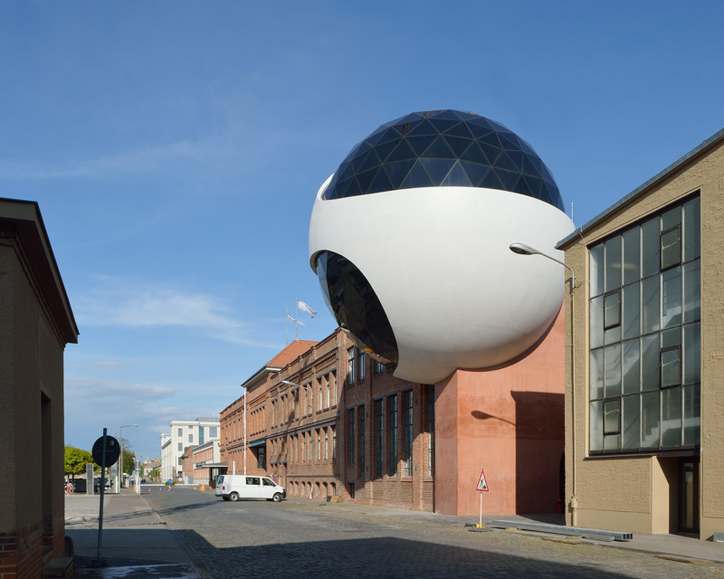
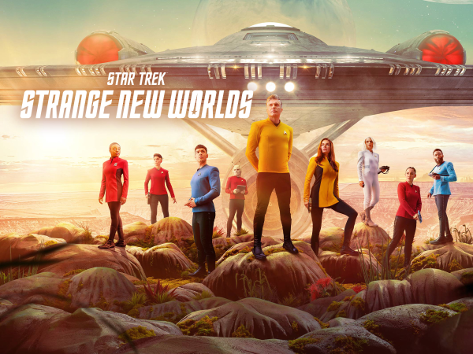

Sword & Sworcery EP
Поиграл, как нынче говорят, "с кайфом")
Поиграл, как нынче говорят, "с кайфом")
Я знаю, что есть фотографы, которые не проявляют отснятые пленки сразу (бывает, что и целый год) — они считают, что ты слишком эмоционально связан с тем, что отснял, и нужно время, чтобы эту эмоциональную связь разорвать, затем чтбы более трезво взглянуть на результат.
Мне этого никогда не удавалось, потому что нужно откуда-то взять этот год, когда тебе есть что достать и проявить, и отсмотреть, пока ты кладешь на полку свежеснятое, но я никогда не снимал столько, чтобы вот так отложить и ждать.
Но я вдруг понял, что все равно делаю почти так, когда смотрю и выбираю какую бы еще картинку опубликовать: я просматриваю старые файлы, и обращаю внимание в них на что-то, что изначально мне совсем не показалось важным или интересным. И случается, что мне гораздо чаще что-то нравится, чем сразу после того, как я это снял и проявил.
Я думал — причина не смотреть сразу в том, что ты из-за эмоциональной связи выберешь что-то неинтересное, но, похоже, что ты можешь и наоборот — не заметить что-то ценное, что возможно извлечь только спустя время.

А какое крутое в Лейпциге есть кафе!

Блин, такой клевый вайб!